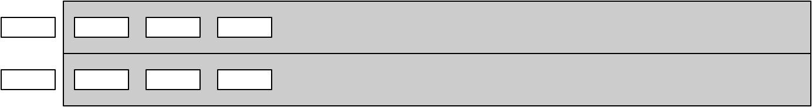

Snelheid van communicatie¶
Concepten en leerdoelen
snelheid:
- bitsnelheid (throughput, bandbreedte) en
- vertraging (latency)
Beschouw in het morsecode-voorbeeld van het vorige hoofdstuk het bericht in de vorm van een reeks lettertekens. Hoe snel komt dit bericht bij Bob aan? Waar hangt dit van af?
- de lengte van het bericht (aantal tekens);
- de tekensnelheid van de telegrafist: het aantal tekens per seconde dat deze kan versturen;
- de transportsnelheid van de tekens en de lengte van de verbinding van Alice naar Bob.
{kind=link}
Je kunt een bericht in een verbinding vergelijken met een serie auto’s op een weg: de snelheid waarmee de auto’s achter elkaar vertrekken, het aantal auto’s, de snelheid waarmee de auto’s rijden, en de lengte van de weg bepalen de tijd tussen vertrek en aankomst.
Opmerking
De maximale transportsnelheid van de tekens wordt beperkt door de lichtsnelheid. De lichtsnelheid lijkt verwaarloosbaar in ons dagelijks leven - maar voor computers is dat niet helemaal het geval: de lichtsnelheid is ca. 30 cm/nsec (0,3.10^9 m/s) - een “foot per nanosecond”, zoals uitgelegd door Grace Hopper (https://www.youtube.com/watch?v=JEpsKnWZrJ8). Een elektrisch signaal in een draad kan zich voortplanten met ca. 0,9 maal de lichtsnelheid. Een processor met een kloksnelheid van 3 GHz. kan in 1 nsec. ongeveer 3 instructies uitvoeren: de lichtsnelheid is “10 cm per instructie”. Met andere woorden: in de tijd dat een signaal 1 km aflegt, kan deze processor tenminste 10.000 instructies uitvoeren.
De tijd die nodig is voor het transporteren van een bericht hangt af van (i) de omvang van het bericht, en van (ii) de snelheid van de verbinding. Twee begrippen geven samen de snelheid van een verbinding aan:
- de bandbreedte: het aantal tekens (meestal: bits) dat de verbinding per seconde kan transporteren; (in bits per seconde; ook wel: bitsnelheid) en
- de latency: de tijd dat een teken onderweg (“verborgen”) is (in seconden).
In het bovenstaande model is de bandbreedte de tekensnelheid. De latency is de lengte van de verbinding gedeeld door de transportsnelheid.
De bandbreedte wordt soms ook uitgedrukt in Hz, als er sprake is van een analoge verbinding. Bijvoorbeeld: de bandbreedte van een analoge telefoonverbinding is ongeveer 3000Hz (300-3400Hz).
Bij digitale communicatie zijn er nog meer factoren die de latency beïnvloeden: bijvoorbeeld de rekentijd die nodig is om een bericht de juiste kant op te sturen (routering), en de rekentijd die nodig is voor het coderen en decoderen van een bericht.
Ook bij andere informatieprocessen: rekenen en opslag/terugzoeken, hebben we te maken met de begrippen bandbreedte (of bitsnelheid) en latency.
We kunnen de bandbreedte van een verbinding eenvoudig vergroten door meerdere parallelle verbindingen te gebruiken:
{kind=link}
Het verkleinen van de latency is in het algemeen veel lastiger; vaak betekent dit het verkleinen van de afstand en van het aantal tussenstappen (voor routering e.d.) in de communicatie.
Als tijd (snelheid) een grote rol speelt, dan is de afstand waarover gecommuniceerd wordt van belang. Dit zie je bijvoorbeeld bij de aandelenhandel van Wall Street: de computers van handelaren, met allerlei slimme algoritmen, worden zo dicht mogelijk in de buurt geplaatst van de computers waarmee de beurstransacties plaatsvinden - om de “flitshandel” mogelijk te maken waarbij aandelen in fracties van een seconde gekocht en verkocht worden. (Zie bijvoorbeeld: Kevin Slavin, How algorithms shape our world; https://www.youtube.com/watch?v=TDaFwnOiKVE).
Te doen
Dit moet nog gedaan worden.